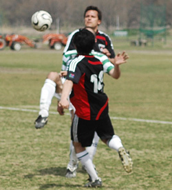
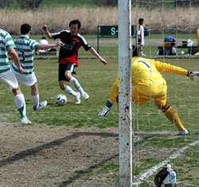
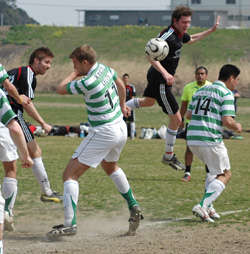
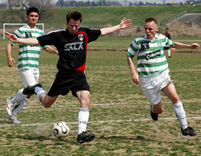

|
Misato Sunday 23rd March,
In a fairly fought match between two physical sides, Sala showed more attacking quality and better teamwork to come out on top at Misato. A goal in each half for Sala and a late penalty for Celts left the game at 2-1 come the final whistle, and left Sala still within striking distance of the top two.
The game had started brightly for Celts and saw them winning the vital midfield battle, overpowering Sala in the air and gaining a territorial advantage. From this fothold, they were able to launch numerous attacks in the first 15 minutes, although most of these attacks lacked any real guile on the deck, and with the Sala defence holding strong, Celts were only able to turn their superiority into a series of corner kicks. One of which resulted in a powerful header which had Sid beaten, only for young Daniel Bard to head the ball clear off the goal line. In amongst all his pole-dancing pursuits it's amazing were he gets the energy. Another corner led to a header off the bar and although Celt's weren't exactly tearing Sala apart, it was clear Sala needed to shuffle the pack and bring a bit more power to the table.
During this opening period, Sala only managed one meaningful attack, in the form of a swift counter. Masa collected a pass on the left then diddled the Celt's right-back and drilled a cut-back to the nearpost. Dhugal was in the perfect position and connected well with the ball, only to see his first time effort ricochet off a defender's leg. The resultant corner came to nothing.
It was at this point that Sala made an important tactical change. Shige moved out to the right wing, allowing Guido to come up into central midfield, partnering Scotty and bringing with him the kind of aerial power that was needed to combat Henry, Celt's most influential player. From this point on Sala looked in control, especially with Clarkey stepping in for Guido at the back, where he bested his opponent in the air, and formed a solid partnership with Ian.
Shige started to do some good work down the right and suddenly Celt's were less effective down the middle. The Sala front two of Toby and Dhugal also started to master their markers and their flick-ons began to cause havoc, creating chances for each other, and Sala's onrushing midfielders. One good run from Shige ended in a cross which bounced off the bar. Sala were staring to force corners at this point too. It was from one of these that Toby opened the scoring. A fine swerving cross from Masa and a precision header from Toby which was well out of the Celt's keeper's reach. 1-0 Sala.
 Sala should have made it two before half time. After a fine run and through ball from Shige to Dhugal, the galloping Australian rushed in on goal and finding himself with oodles of time he seemed to be in two minds whether to lash the ball home or write his memoirs. In the end he decided to blaze high and wide and I believe he'll be completing his memoirs after Sala do the double.
Another run and blocked shot from Dhugal, after Toby's flick-on, was the only other threat on goal before half time.
The second half mosied along for a bit before the introduction of Sam, who returned from injury, spiced things up a bit. After good build up play down the right Sam beat his man and cut back to Scotty whose side-footed shot went through a few sets of legs before trickling wide of the far post. Masa then produced the best moment of the game. Picking the ball up at the half-way line he skinned two Celt's players at speed, cut inside and unleashed a viscious howitzer of a swerving shot which fizzed just wide of the far top corner. Goal of the season it may well have been. Jest with you I do not, sports fans.
Another good move down the left involving Lenny, Scotty and Yusuke almost created another goal for Sala but the Celt's held firm. Their keeper then produced a good save from Toby's nice half-volley.
 Meanwhile Celts were still going forward but they couldn't find any telling final balls. Indeed, it was by breaking up one of their attacks that Sala scored their second. A solid tackle from Scotty on Henry on the edge of the box saw the ball break to Sam who played it on to Toby.
From here the ball was passed to Dhugal and Sala were pouring forward in numbers with Guido leading the charge. Dhugal split the retreating Celt's rearguard with a through ball which either Toby or Guido could have collected. In the end it was Guido who got there first, only to be clipped by a clumsy, but not intentional, last gasp challenge in the Celt's box. Penalty to Sala. Guido dusted himself off and slotted home the spot kick sending the keeper the wrong way.
From here on in it looked like there wouldn't be any more goals, until Celt's were rewarded for their hard work with a somewhat soft penalty for handball against Scotty. A nice ball over the top put Sala on the backfoot and as Scotty tracked his opposing central midfielder into the box he was just a little bit slow getting to the ball, enabling the Celt's player to get a touch first. That touch played the ball onto the defending midfielder's hand, and despite his hand being against his chest, this touch was deemed to merit a penalty. Celt's converted the spot kick. 2-1 Sala.
The last 10 minutes could have been more uncomfortable for Sala, had they collapsed like in recent games against Jets and Geckoes where they had to defend a lead, but cooler heads, less in-fighting and Stu holding the ball up front saw them see out the final whistle, and deservedly so too.
Report by Scorchio
|